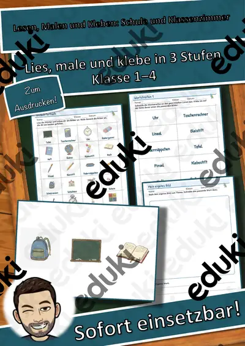
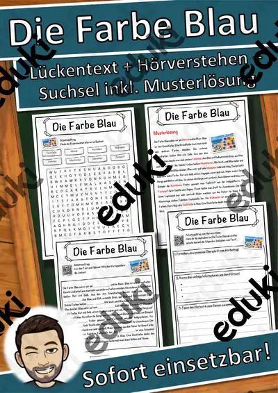

Wasserfarben, Techniklabor Wasserfarben, Wasserfarbe Einführung, Führerschein, ab 1. Klasse
Wasserfarben, Techniklabor Wasserfarben, Wasserfarbe Einführung, Führerschein, ab 1. Klasse: Mit diesem Techniklabor Wasserfarben-Material erhalten Sie Stationen zu 12 unterschiedlichen Experimenten zum Arbeiten mit Wasserfarbe und dem Farbkasten. Außerdem werden die Bestandteile des Farbkastens aufgezeigt und die Schüler zum erstellen von Plakaten zum Thema Wasserfarbe aufgefordert. (Bestandteile, Pinsel, Regeln)
FachKunst
KlasseKl. 2–5
SchulformGrundschule
MaterialartStundenentwürfe, Unterrichtsreihen, Arbeitsblätter, Stationenlernen
Ähnliche Materialien

Führerschein Lückentext mit Wortspeicher Hörverstehen und Suchsel

Plakat und Typografie – Gestalten mit Schrift und Bild – Lesespurgeschichte mit Rätselaufgaben (Klasse 8)

Lesen, Malen und Kleben: Schule und Klassenzimmer – Lesen und Malen – Klasse 1–4

Inn Lückentext mit Wortspeicher Hörverstehen und Suchsel

Orange Lückentext mit Wortspeicher Hörverstehen und Suchsel

Die Farbe Blau Lückentext mit Wortspeicher Hörverstehen und Suchsel

Plakat Lückentext mit Wortspeicher Hörverstehen und Suchsel